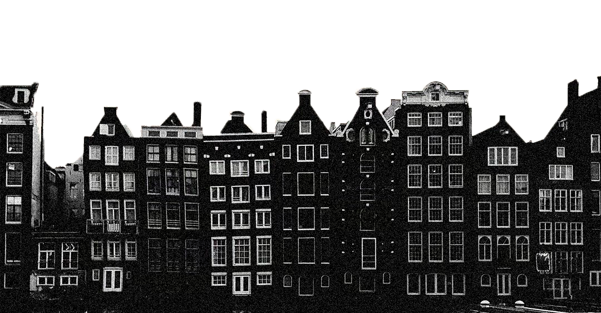
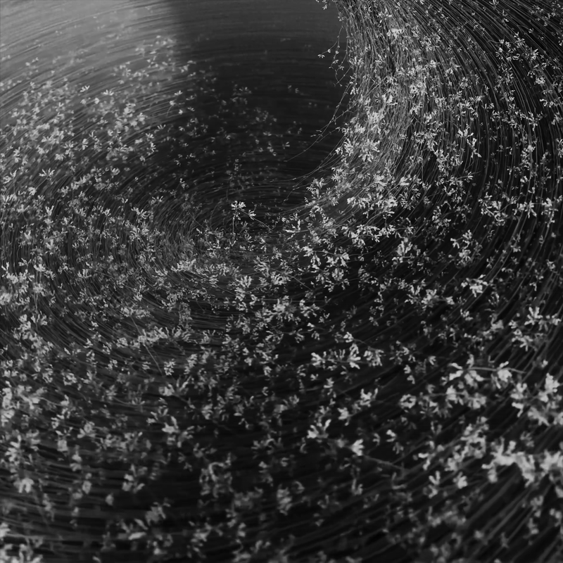
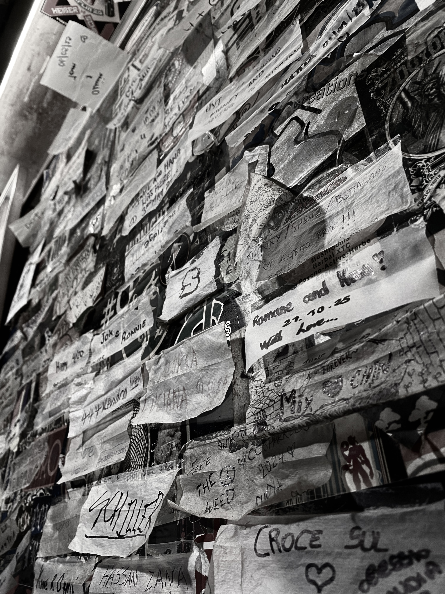
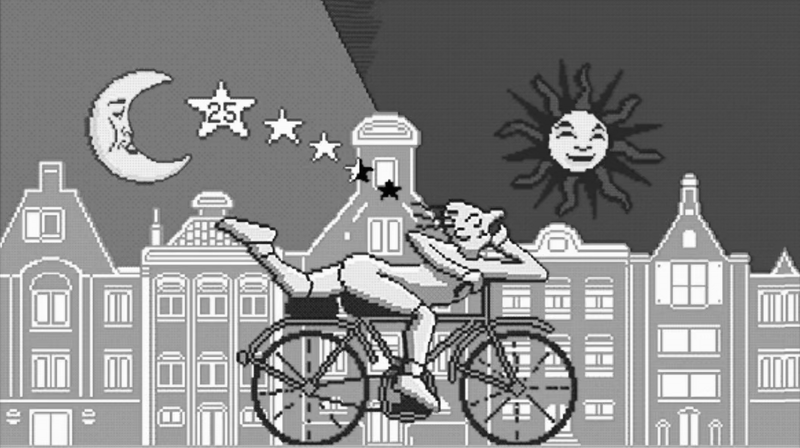
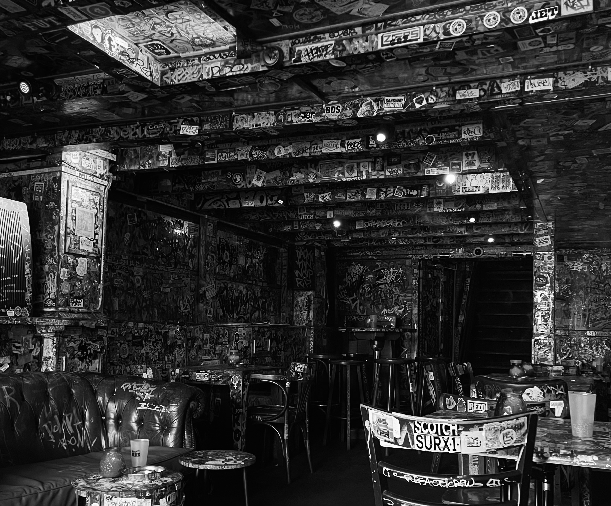
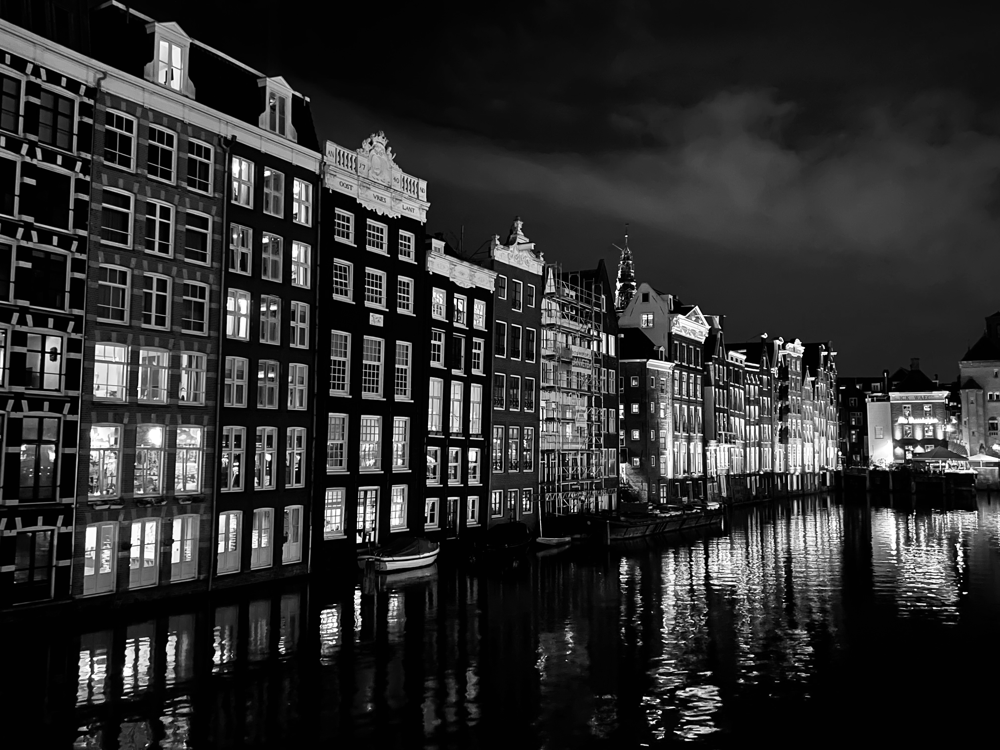

Amsterdam
n’est pas un décor.
C’est un état mental.
une ville qui laisse
respirer l’expérimentation
qui rend la création plus facile
& l’invisible plus présent.

Il y a des villes où l’on visite, et d’autres où l’on ressent. Amsterdam appartient à la seconde catégorie. Ici, la liberté n’est pas une affiche : elle flotte. Elle se glisse dans la façon dont les gens créent, s’habillent, se permettent d’essayer.
Ce qui donne l’impression de magie, c’est peut-être ça : une permission tacite d’expérimenter sans être
directement jugé. Artistiquement, mentalement, humainement.
« la ville te laisse tranquille et ça change tout. »

Amsterdam est souvent réduite à une image simpliste du psychédélique. Pourtant, derrière cette façade, se développe une culture plus profonde, tournée vers la perception, le décalage et l’exploration intérieure.
Le psyché n’est pas seulement chimique : il est visuel, sonore, spirituel. Affiches bricolées,
lumières pauvres, typographies liquides, murs qui vibrent.
« Amsterdam n’ajoute rien, elle enlève des filtres. »

L’underground d’Amsterdam ne se trouve pas sur une carte : il circule. Les soirées les plus marquantes ne sont jamais annoncées publiquement. Elles passent par la confiance, par messages privés, par timing.
Ce qui frappe, ce n’est pas l’excès mais l’organisation. Règles implicites, respect,
attention aux autres. L’underground n’est pas un chaos : c’est une structure invisible.
« tu comprends vite que le respect est la règle principale. »

Le véritable impact d’Amsterdam se mesure après. Quand la nuit se termine, quand les lumières s’éteignent, il reste une sensation étrange mais persistante.
Beaucoup repartent avec plus que des souvenirs : une idée différente de la liberté,
de la création et de ce que peut être une communauté.
« le silence du matin fait plus de bruit que la nuit. »